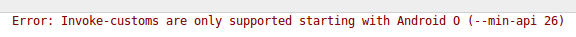

3.1 - Connexió remota
Utilitzarem les mateixes classes que en Java. És a dir, el driver JDBC ens funcionarà bé, i tot serà igual que allà. Tan sols haurem de preocupar-nos de donar permís a l'aplicació de connectar-se a Internet, i evidentment acoplar-lo per a poder visualitzar les coses en Android.
La veurem per a PostgreSQL, però seria senzillíssim fer-la per a Oracle o MySQL, senzillament canviant el driver JDBC i en tot cas la consulta d'accés.
L'exemple que veurem serà molt senzill: ens connectem a una Base de Dades, consultem una taula i intentem veure el contingut en un EditText multilínia. Anirem comentant i solucionant els problemes que poden sorgir.
El primer que farem serà dissenyar l'aplicació, dissenyar el layout, per a poder contenir les dades. Només ens plantegem un EditText per a visualitzar les dades.
Sobre un projecte Android nou, anomenat ConnexioPostgreSQL. Per a poder copiar sense problemes els programes posteriors, posarem el domini example.com, i així el paquet es dirà com.example.connexiopostgresql. Podeu copiar el layout activity_main.xml:
Es pot observar que únicament hem muntat un EditText amb el nom text, que s'ajusta a tota la pantalla, i que és multilínia.
El programa és senzill. Només hauríem de connectar, executar la sentència (com és un SELECT serà executeQuery que retorna un ResultSet), recórrer el ResultSet i anar afegint al EditText.
Tenim, però, una complicació. Des de la versió 3 d'Android no es permet una connexió a Internet des del programa principal, i per tant haurem de muntar un thread on es faça la connexió a PostgreSQL. Podríem estar temptats de fer-lo tot en el thread fill, però tenim una altra complicació, i és que només es poden canviar els controls del layout principal des del programa principal. És a dir, que el EditText només es pot canviar des del MainActivity (si no li hem canviat el nom, es dirà així).
La solució serà omplir en el thread fill una estructura de dades, per exemple un ArrayList de Strings. I en el programa principal esperar a l'execució del thread fill, i després posar tot el ArrayList al EditText
JAVA
import java.sql.Connection;
import java.sql.DriverManager;
import java.sql.ResultSet;
import java.sql.SQLException;
import java.sql.Statement;
import java.util.ArrayList;
import android.support.v7.app.AppCompatActivity;
import android.os.Bundle;
import android.widget.EditText;
public class MainActivity extends AppCompatActivity {
ArrayList<String> cont = null;
@Override
protected void onCreate(Bundle savedInstanceState) {
super.onCreate(savedInstanceState);
setContentView(R.layout.activity_main);
cont = new ArrayList<String>();
EditText text = (EditText) findViewById(R.id.text);
// Des de la versió 3 d'Android, no es permet obrir una connexió des del thread principal.
// Per tant s'ha de crear un nou.
sqlThread.start();
// i ara esperem a que finalitze el thread fill unint-lo (join)
try {
sqlThread.join();
} catch (InterruptedException e) {
e.printStackTrace();
}
for (int i=0;i<cont.size();i++)
text.append(cont.get(i) + " ");
}
Thread sqlThread = new Thread() {
public void run() {
try {
Class.forName("org.postgresql.Driver");
Connection conn = DriverManager.getConnection("jdbc:postgresql://89.36.214.106:5432/geo_ad","geo_ad", "geo_ad");
String sentencia = "SELECT * FROM COMARCA ORDER BY 1";
Statement st = conn.createStatement();
ResultSet rs = st.executeQuery(sentencia);
while (rs.next()) {
cont.add(rs.getString(1) + " - " + rs.getString(2) + "\n");
}
rs.close();
conn.close();
} catch (SQLException se) {
System.out.println("No es pot connectar. Error: " + se.toString());
} catch (ClassNotFoundException e) {
System.out.println("No es troba la classe. Error: " + e.getMessage());
}
}
};
}
Per últim tan sols queda donar el permís d'accés a Internet. Hem de modificar l'arxiu AndroidManifest.xml, i afegir en la penúltima línia (dins de manifest però fora d'application):
<uses-permission android:name="android.permission.INTERNET" />
I no ens hem d'oblidar d'afegir el driver JDBC de PostgreSQL al projecte. En Android Studio ho podem fer copiant el driver al directori libs (per tenir-ho més ordenat), i després amb el botó de la dreta sobre el fitxer triar Add as library.
Podria donar-se el cas que la versió del driver de PostgreSQL done problemes de compatibilitat amb API's antigues. Senzillament hauríem de pujar el nivell del minSdkVersion en el build.gradle que està dins de src. En el cas de fer aquestos apunts, amb el driver de PostgreSQL postgresql-42.2.5.jar, avisava que el mínim havia de ser 26:

Canviant minSdkVersion a 26 desapareix l'error. Una altra solució, evidentment seria afegir una versió del driver anterior.
KOTLIN
import android.os.Bundle
import androidx.appcompat.app.AppCompatActivity
import kotlinx.android.synthetic.main.activity_main.*
import java.sql.DriverManager
class MainActivity : AppCompatActivity() {
internal var cont: String = ""
private var sqlThread: Thread = object : Thread() {
override fun run() {
val conn = DriverManager.getConnection(
"jdbc:postgresql://89.36.214.106:5432/geo_ad",
"geo_ad",
"geo_ad"
)
val sentencia = "SELECT * FROM COMARCA ORDER BY 1"
val st = conn.createStatement()
val rs = st.executeQuery(sentencia)
while (rs.next()) {
cont+=(rs.getString(1) + " - " + rs.getString(2) + "\n")
}
rs.close()
conn.close()
}
}
override fun onCreate(savedInstanceState: Bundle?) {
super.onCreate(savedInstanceState)
setContentView(R.layout.activity_main)
// Des de la versió 3 d'Android, no es permet obrir una connexió des del thread principal.
// Per tant s'ha de crear un nou.
sqlThread.start()
// i ara esperem a que finalitze el thread fill unint-lo (join)
try {
sqlThread.join()
} catch (e: InterruptedException) {
e.printStackTrace()
}
text.setText(cont)
}
}
La següent imatge mostra l'execució sobre el simulador:

Llicenciat sota la Llicència Creative Commons Reconeixement NoComercial CompartirIgual 2.5